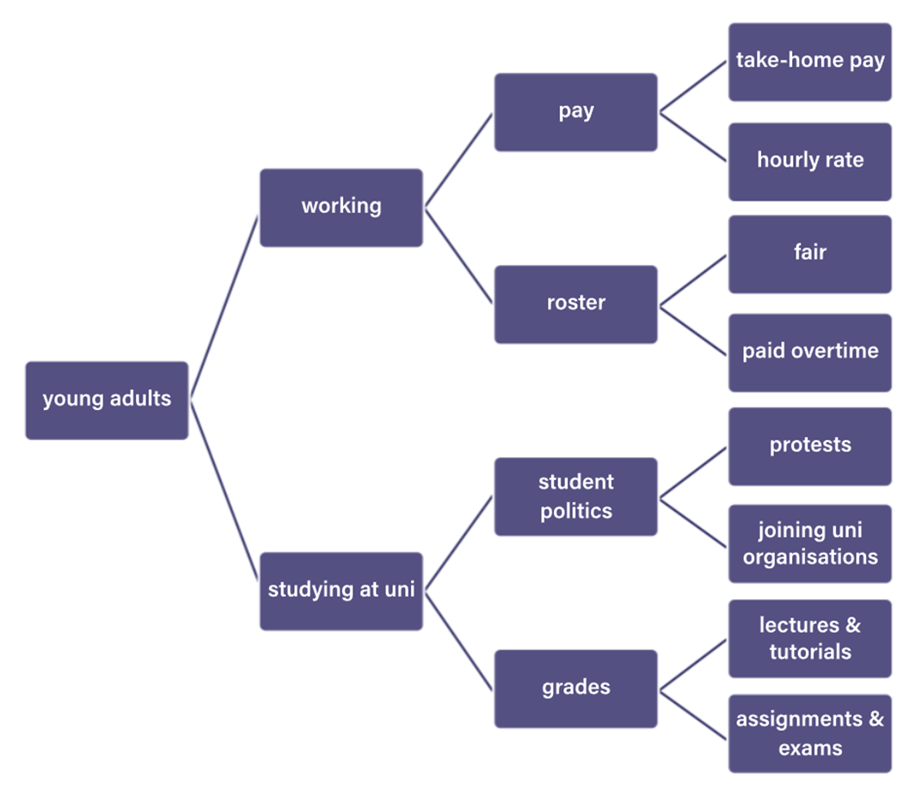

On this page
- What you are trying to achieve
- Include
- Revise
- Sentence structure
- Key Information Phrase
- Tones
- Audience
- Body Paragraphs
- What you are trying to achieve
- Step 1: What?
- Step 2: How?
- Step 3: Why?
- Step 4: Examine (Optional)
- Conclusion
- What you are trying to achieve
- Include
- Note
- Complex Sentence and Paragraph Building
- Techniques for Stronger Sentences
- W.A.S.T.E.: F.A.T.!
- W.A.S.T.E.: F.A.T. Medium Example
- W.A.S.T.E.: F.A.T. High Example
- Fill-in-the-blanks Analysing Argument Template for an Introduction
Essay Structure
Introduction
What you are trying to achieve
The purpose of an introduction is to ’introduce’ both the irrefutable facts about the text you will be analysing, and your interpretation of the text. The best way to do this is to connect the text’s plain details with your early analysis of what the contention, tone and intended audience.
Include
Context and contention
Details (writer, publication, date and text type)
Major persuasive devices
Tone (consistant or shifting)
Intended audience and how you know this
Revise
A common mistake students make is that they turn their introductions into lists of everything they need to include. Remember to express yourself clearly, professionally and with style. This is the introduction to your analysiss and sets your assesor’s expectations for the rest of the piece.
Sentence structure
The first part of your introduction should focus on what issue is being discussed and why it is important. This will help you to create an opening to demonstrate a strong understanding of the article, for example:
The current trend of dangerous Tik-Tok challenges has once again sparked debate over whether we should be restricting access to the wildly popular app.
If we break it down it becomes:
The current trend - Phrase of recency
of dangerous Tik-tok challenges - Incident
has once again sparked - Verb phrase
debate - Issue
Here are some sample sentence builders:
| Phrases of Recency | Verb Phrases | Issues |
|---|---|---|
| The latest... | ...has once again raised... | issue |
| The present... | ...has sparked... | debate |
| The recent... | ...has led to... | argument |
| The earlier... | ...has motivated... | discussions |
| The current... | ...has caused... | disputes |
| Once again... | ...has generated... | altercation |
| Recently... | ...has engendered... | discourse |
| Lately... | ...has provoked... | consultation |
| Over the past year... | ...has propagated... | dialogue |
Key Information Phrase
In this section we should include key information that is usually found in the background information section of the text, including:
Author’s name
Connection of author to text
The form of the piece, the date and where it was published
How this links back to the issue you identified in your first sentence
For example, this sentence can look like:
Dr Marko Shellius, CEO of Psychiatric Safe Australia, has written a submission to the parliamentary inquiry into social media, in particular addressing Tik-Tok’s burgeoning influence over Australian teens.
If we break it down, it looks like this:
This order can also be moved around as well:
Here are some sentence starters to help build these sentences:
Tones
Analysing argument involves understanding how authors use language to persuade their audience. This includes identifying the author’s tone, which refers to the overall feeling or attitude conveyed in the text. Recognising shifts in tone is crucial as it often accompanies changes in argument strategies. Authors use tone to appeal to the reader’s emotions, establish credibility, and guide the reader’s interpretation of the argument. This is the perfect place for you to show the breadth of your vocabulary. Choose a specific word that relates to the article. Always avoid using the terms ’Positive’, ’Negative’ and ’Neutral’.”
| Amazed | Calm | Appreciative | Affectionate | Amiable |
| Astonished | Casual | Approving | Benevolent | Amused |
| Attentive | Collected | Assuring | Compassionate | Cheerful |
| Curious | Composed | Confident | Concerned | Delighted |
| Eager | Content | Determined | Considerate | Ecstatic |
| Interested | Peaceful | Encouraging | Consoling | Elated |
| Keen | Pleasant | Grateful | Empathetic | Energetic |
| Polite | Relaxed | Hopeful | Emphatic | Enthusiastic |
| Startled | Relieved | Inspiring | Friendly | Excited |
| Stunned | Serene | Optimistic | Loving | Exuberant |
| Surprised | Pleased | Merciful | Happy | |
| Promising | Romantic | Humourous | ||
| Proud | Soothing | Jovial | ||
| Respectful | Supportive | Joyful | ||
| Reverent | Sympathetic | Jubilant | ||
| Sanguine | Thoughtful | Playful | ||
| Satisfied | Vibrant | |||
| Thankful | Vivacious |
| Admonitory | Factual | Patriotic |
| Allusive | Formal | Personal |
| Authoritative | Frank | Picturesque |
| Balance | Honest | Questioning |
| Blunt | Informal | Reflective |
| Candid | Informative | Reminiscent |
| Colloquial | Knowledgeable | Resigned |
| Contemplative | Learned | Scholarly |
| Controlled | Lyrical | Serious |
| Conversational | Naïve | Sublime |
| Discursive | Noble | Virile |
| Distinct | Nostalgic | |
| Evocative | ||
| Expectant |
| Negative and passive | Negative thoughts | Negative and uncontrolled | Negative and forceful |
| Apathetic | Apologetic | Agitated | Accusing |
| Bored | Critical | Alarmed | Aggravated |
| Cold | Doubtful | Anxious | Angry |
| Dejected | Envious | Apprehensive | Annoyed |
| Depressed | Foreboding | Defenceless | Belligerent |
| Despaired | Frustrated | Distressed | Calculating |
| Disappointed | Gloomy | Disturbed | Condemnatory |
| Discontented | Guilty | Embarrassed | Condescending |
| Disinterested | Judgmental | Fearful | Contempt |
| Dispirited | Pessimistic | Helpless | Disgusted |
| Gloomy | Regretful | Humiliated | Factious |
| Hopeless | Remorseful | Mortified | Furious |
| Hurt | Shameful | Nervous | Harsh |
| Melancholy | Solemn | Powerless | Hateful |
| Miserable | Somber | Shocked | Insulting |
| Regretful | Suspicious | Stressed | Irritated |
| Sad | Tensed | Manipulative | |
| Upset | Troubled | Outraged | |
| Uneasy | Quarrelsome | ||
| Vulnerable | Sarcastic | ||
| Worried | Sardonic | ||
| Vexed |
Audience
The audience refers to anyone who is viewing, reading or listening to a text. When writing an analysing argument essay, it isn’t enough to just say your audience is ‘everyone’ or ‘all Australians’. You need to refine your idea of who you are writing for! Three questions to ask yourself
What is the author writing about?
Who would be interested in this topic?
Is there more than one audience who might be interested in this?

The key take-away is that you need to be as specific as possible when stating the intended audience.
Body Paragraphs
What you are trying to achieve
Each body paragraph should explore, in sequence, the major arguments that the author uses to support their contention. Remember you are being assessed on your ability to analyse the arguments the author uses and how the language they have chosen supports these.
Step 1: What?
Outline what the author is arguing in your own words. Make a comment on structure; if this is the first or final argument then what is the reason the author introduced this at this time.
Step 2: How?
Begin by identifying the persuasive language features that the author uses to substantiate their argument, include a quote illustrating your point (but no more than 5 words). But this is not enough, then you need to analyse the effectiveness of this approach and discuss how it positions the audience. If there is an image associated with this argument, you should talk about it here - treat it like a persuasive device. Depending on the argument, you may want to talk about how a group of persuasive devices work together. Note: Try to avoid repetition by constantly stating ’The author uses X which makes the audience feel Y. This can come across tacky and quite robotic. To see examples of how this can be done in a successful way, look at the three high-scoring essays below.
Step 3: Why?
Finally, you need to infer why the author chose this approach, what is their persuasive intent? How would it appeal to their particular audience? How does it impact the tone of the article? How does this support their contention?
Step 4: Examine (Optional)
Does the tone change for this argument? Does the structure change? How does this position the audience?
Conclusion
What you are trying to achieve
In your conclusion, you are exploring both how the text concludes and wrapping up your analysis at the same time. It is an opportunity to discuss the text as a whole, and emphasises your analytical skills.
Include
Comment on the structure of the article, including whether there is a consistent or changing tone of writing.
Focus on the last paragraph of the article, evaluating how it supports the writer’s contention.
Evaluate whether the article developed more trust in the readers and explain why.
Note
Some students find they don’t have time for a conclusion. This isn’t ideal, but it isn’t the end of the world, as most of this information should have been explicit throughout. If you are running short on time, a sentence summarising how each argument leads to the contention is sufficient.
Complex Sentence and Paragraph Building
When analysing persuasive texts, it’s not enough to simply spot techniques—you need to explain what is happening, why it’s there, and how it affects the audience. Students often start with short, seperate sentences: ’The writer uses emotive language. This makes the audience feel sympathy’ A stronger version combines ideas into one complex sentence: ‘Describing the victims as “cruelly abandoned” evokes a deep sense of sympathy in the audience, prompting them to see the government as neglectful and morally failing in its duty of care.’
Techniques for Stronger Sentences
Subordinating conjunctions – because, although, while, since, if
Embedded quotes – weave quotes into the sentence naturally
Relative clauses – who, which, that
Appositives – a technique aimed at…
By applying these sentence-building tools, your analysis will become more precise, connected, and persuasive—mirroring the sophistication expected in high-level responses. To help you identify and discuss these elements in a clear, structured way, we will now look at a step-by-step framework that breaks persuasive writing into its key components.
W.A.S.T.E.: F.A.T.!
This acronym is designed to assist you in crafting complex and sophisticated sentences that strengthen your analytical writing. In higher-scoring essays, writers deliberately weave these elements into their work to add depth, clarity, and precision. While it is not necessary to include every element in every individual sentence, you should aim to integrate all of them across the body of your essay. This means that, by the end of each body paragraph, the reader should be able to identify how you have employed these elements to develop your argument, enhance your expression, and engage the audience effectively. Consistent and purposeful use of these techniques will not only improve sentence complexity but also demonstrate a mature and well-structured writing style.
Words – Focus on the most persuasive words or phrases of the piece.
Argument – What is the supporting argument of each section?
Structure – Where is this located in the piece and why?
Tone – How does the author apply tone to be more persuasive in each section?
Effect upon the audience – How does it position the audience to:
Feel?
Act?
Think?
W.A.S.T.E.: F.A.T. Medium Example
The editorial uses emotionally charged words such as “climate catastrophe”, “tipping point”, and “irreversible damage” to stress the seriousness of the issue. The supporting argument is that urgent government action is necessary to prevent catastrophic environmental collapse. These phrases appear in the introduction so that the reader is immediately confronted with the scale of the problem. The author adopts an alarmist and urgent tone to heighten concern and prompt immediate attention. This positions the audience to feel fear and anxiety about the future, to act by pressuring politicians or signing petitions, and to think that if society does not act now, it will be too late.
W.A.S.T.E.: F.A.T. High Example
The editorial uses emotive phrases such as “climate catastrophe”, “tipping point”, and “irreversible damage” in its introduction to immediately confront the reader with the scale of the problem. By presenting the argument that urgent government action is needed to prevent environmental collapse, the writer establishes the issue as both pressing and unavoidable. Through an alarmist and urgent tone, the piece positions the audience to feel fear, act by pressuring politicians or signing petitions, and think that immediate intervention is essential.
Fill-in-the-blanks Analysing Argument Template for an Introduction
Your introduction should discuss the writer’s contention and intention, the specific audience, the form, and the publication details, as well as the context of the issue. You might like to make a comment about the tone of the piece in the introduction. Here is a sample introduction structure: The issue of ….. (issue) was addressed in a ….. (text type) for ….. (publication) on ….. (date). ….. (Author) contends, in a ….. (tonal word) and at times ….. (tonal word) voice that ….. (contention). The piece is predominantly ….. (words about overall structure or style) in style, and seeks to position its ….. (audience) to accept ….. (intention). Another sample introduction structure could look like this: Following ….. (context), debate resurfaced regarding ….. (issue). In a ….. (text type) for ….. (publication) on ….. (date), ….. (author) argues in a ….. (tonal word) and ….. (tonal word) fashion that ….. (contention), and seeks to ….. (intention). The piece, targeted at ….. (audience), ….. . For example: In the wake of the recent sentencing of murderer John Smith, Sarah Farah’s letter to the editor of The Daily Telegraph (9 June 2014), raises the issue of perceived injustice in the treatment of Australian citizens. In an aggressive tone, she contends that the penalty imposed on this man was too harsh and that such punishment represents a form of anti Australian discrimination. Thus, she hopes to prompt the Australian Government to take action to protect its citizens.